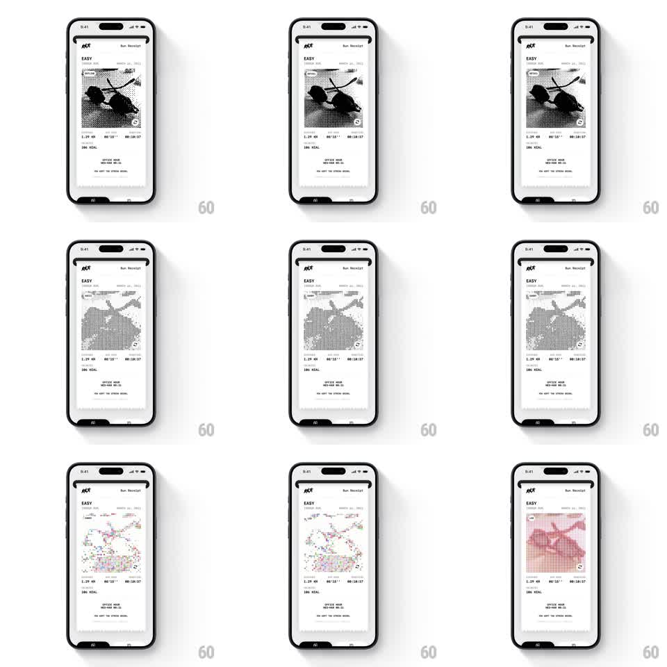

Media
Frame-by-frame

Rebuild this interaction 1:1: Run Receipt's pixel-mode image - tapping the route image on a thermal-style run receipt cycles it through rendering modes: dithered halftone, ASCII glyphs, sparse dot grid, and a color LCD pixel mode.

Rebuild this interaction 1:1: Run Receipt's pixel-mode image - tapping the route image on a thermal-style run receipt cycles it through rendering modes: dithered halftone, ASCII glyphs, sparse dot grid, and a color LCD pixel mode. ## Integration Integration: stack-agnostic spec - springs given as stiffness/damping, timed motions as duration + curve; map every value to your framework and animation library of choice. ## Scene Receipt screen for an "EASY" run: RUN RECEIPT header, the route image block mid-receipt, stat rows (distance, pace, time, kcal) and footer lines below. The image block carries a small mode glyph in its corner. ## Motion spec Pattern: tap-to-cycle image filter modes on a live receipt. - On tap, the image block does a quick glitch shuffle (rows of pixels displace horizontally +/- 6px, 2 frames at 60ms) then resolves into the next mode. - Mode order: dithered B&W halftone -> ASCII characters -> sparse dot matrix -> color LCD (red-tinted chunky pixels) -> back to dithered. - The corner mode glyph swaps with a 150ms crossfade on each change. - Receipt paper and stats stay static; only the image region re-renders. ## Calibration - Each mode must be genuinely re-rendered (real dithering, real glyph density), not an opacity blend between bitmaps. - The glitch transition is two frames max - a blink, not an animation. ## Reduced motion No glitch frames: modes switch with a 150ms crossfade. ## Don't miss - The image keeps its exact frame and position across modes - only its pixels change. - Color LCD mode is the only one with color; everything else on the receipt stays monochrome.